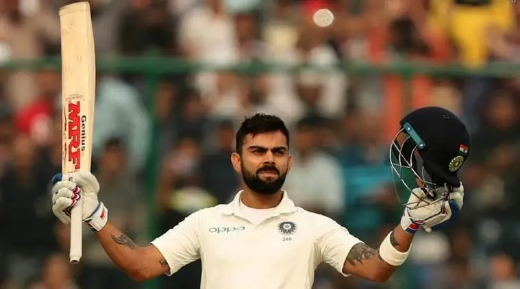
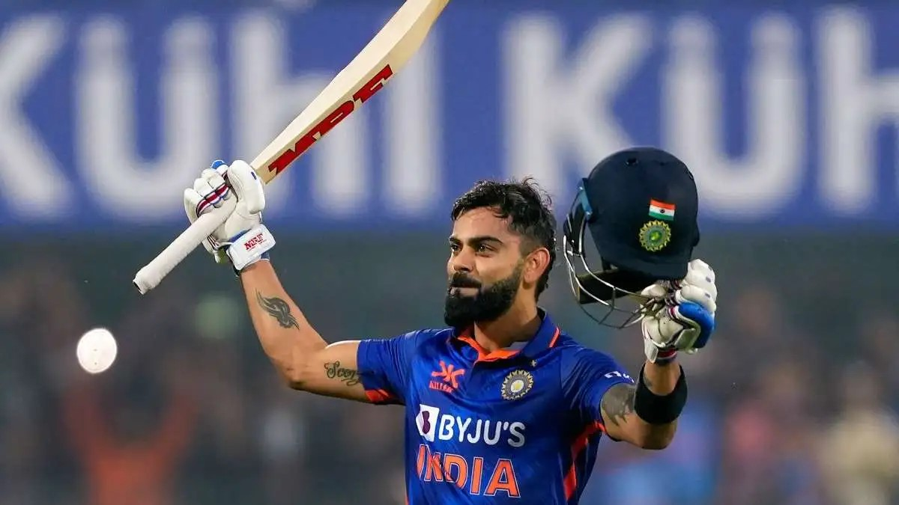
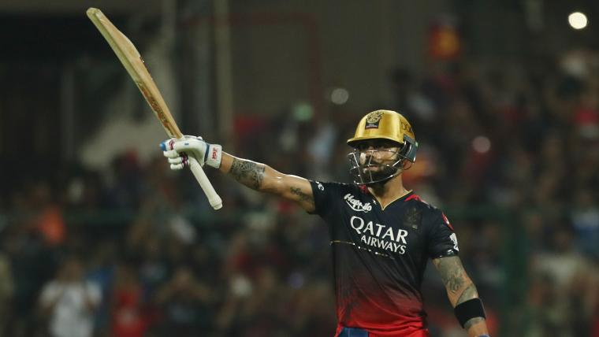
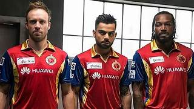
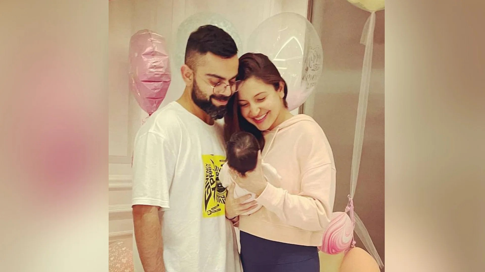
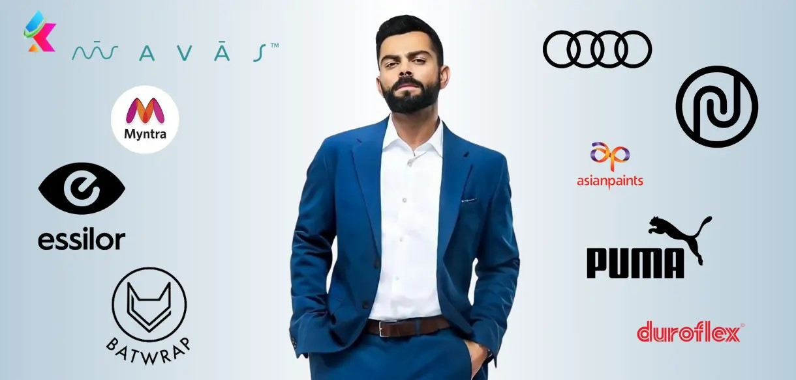

Born : November 1988 (age 36)Delhi, India
Nickname : Cheeku,King Kohli
Height : 5 ft 9 in (175 cm)
Batting : Right-handed
Bowling : Right-arm medium,Right-arm off break
Role : Top-order batter
Relations: Anushka Sharma (m. 2017)

TEST
Number of matches captained : 68
Date of the last match as captain : 11 January 2022
Matches won at home : 24
Matches won away from home : 15
Matches lost : 16
Win rate : 58.82%
ACHIEVEMENTS IN ALL FORMAT

Virat Kohli is the only Indian batsman who got 890 rating points in the ICC ODI ranking. Previously Sachin Tendulkar got the best rating of 887 in 1998.
Virat Kohli has the record of having the highest ICC rating points (922) in the ICC Player Rankings for Test Batsmen.
Virat Kohli scored six double-centuries as a captain in test matches. He surpassed Cricket legend Brian Lara, who had five double centuries as a test captain.
Virat Kohli has the most number of 150+ scores as captain in Tests – 9 times.
Virat Kohli became the first player to hit consecutive 3 centuries in against two opponents (West Indies & Sri Lanka).
Kolhi is the most successful Indian ODI captain. s success rate is 75.89% as a captain which is better than M.S. Dhoni.
Virat Kohli scored more than 20,000 runs at an average of over 50 in all formats -Test matches, One Day Internationals, and T-20 matches.
Rahul Dravid scored 10,000 ODI runs after playing 10 years, 317 days while Kohli achieved this by playing just 10 years and 68 days.
Virat Kohli captained India in 17 T20I bilateral series and won 12 out of them. India lost just 2 series under him.
Virat Kohli creates a record to become the first Indian cricketer to cross 10,000 T20 runs.
Virat Kohli becomes the first-ever player to be part of 50 wins in each of the three formats.
In the 2nd Test match of IND vs NZ 2021 series, India beat New Zealand by 372 runs under Virat Kohli’s captaincy which is the biggest win in terms of runs in the Indian test history.
Ricky Ponting(2006, 2007) and Virat Kohli(2017, 2018) are the only cricketers to win the Sir Garfield Sobers Trophy in successive years.
Virat Kohli becomes the first Indian captain in history to win two Boxing Day Test matches. (AUS vs IND – Melbourne Cricket Ground; SA vs IND at Centurion 2021)
Virat Kohli took over the Test captaincy when India was ranked 7th and Virat steps down from Captaincy when India ranked No.1.
Virat Kohli’s batting record as a Test captain: Innings – 113; Runs – 5,864; Average – 54.80; Hundreds – 20; Fifties – 18.
Virat Kohli as Captain in all formats of International Cricket: Matches – 213; Won – 135; Runs – 12,883; Average – 59.92; Hundreds – 41.
On December 10, 2022 Virat Kohli bagged his 72nd century in the 3rd ODI against Bangladesh and surpassed Ricky Ponting’s 71-century mark.
Virat Kohli bagged the ICC Men’s Player of the Month award for October following his impressive performance in the Asia Cup 2022 and in ICC T20 World Cup 2022.
On 11th March 2023, in the 4th Test match of BGT 2023, Virat Kohli surpassed Brain Lara and became the second player to score the most runs against Australia in international cricket behind Sachin Tendulkar.
On 11th September 2023, Virat Kohli became the third player to score the most 50+ runs in the ODI format in a match against Pakistan in Asia Cup 2023 Super 4s.
On October 08, 2023, during the IND vs AUS ODI World Cup 2023 League game, Virat Kohli became the fastest ever in history to complete 11,000 ODI runs at No.3 position.
On October 19, 2023, Virat Kohli surpassed Brain Lara and AB de Villers in the list of players with the most runs in ODI World Cups.
On October 19, 2023, Virat Kohli became the fastest ever to complete 26,000 runs in International cricket. Virat reached this milestone in just 577 innings while Sachin scored 26000 international runs in 601 innings.
On November 5, 2023, Virat Kohli scored his 49th ODI century against South Africa in the World Cup 2023 group matches and equals Sachin’s record of 49 ODI centuries. Notably, Sachin took 452 innings to achieve this feat while Virat took only 277 innings to score his 49th ODI century.
On November 12, 2023, in the match against the Netherlands, Virat Kohli scored 51 runs and equals Sachin Tendulkar’s record for most 50+ scores in a World Cup edition. Sachin scored seven 50+ scores in the 2003 World Cup while Virat scored 7* in the 2023 World Cup.
On November 15, 2023, in the ODI WC 2023 1st semifinal against New Zealand, Virat scored his 50th ODI century and surpassed Sachin’s record for 49 ODI centuries.
Virat Kohli becomes the first Indian cricketer to score 12000 runs in the T20 format during the first match against CSK in the IPL 2024 campaign. He also has 100 50+ scores in the T20 format after the RCB’s second match in the IPL 2024 campaign against Punjab Kings.
During the RR vs RCB clash on April 6 in Jaipur, Virat becomes the first batter to score 7500 runs in the IPL tournament. In the same match, Virat scored the first century of the IPL 2024, also his 8th in IPL.
On June 29 2024, Virat Kohli won the Player of the Match award for his 76 against South Africa in the T20 World Cup 2024 final in Barbados.
With India’s victory in the T20 World Cup 2024, Virat becomes the first cricketer to win all 4 ICC trophies – U-19 World Cup, T20 World Cup, ODI World Cup, and Champions Trophy.
CHECK: Virat Kohli’s List of Centuries in All Three Formats
THE UNTOLD EMOTIONS OF RCB

About
Ahead of the start of 14th edition of the league, Virat Kohli announced that this would be his final season as Captain of the RCB. Virat Kohli who took over as RCB's full-time captain in 2013, led them in 140 matches, winning 66 and losing as many as 70. What the former RCB Skipper also confirmed to the fans ahead of the IPL Mega Auction was that he will always remain and RCB player, loyal to his franchise. He was picked in the IPL draft ahead of the IPL 2022 mega auction for INR 15 crores. The former Indian Cricket Team’s Captain is popularly known as the Run Machine. Virat Kohli’s ability and hunger to score daddy hundreds has taken the cricket world by storm. The flamboyant cricketer was the captain of the Indian team that won the 2008 ICC U19 Cricket World Cup and since then there has been no looking back for King Kohli. He is the new-age cricketer who is aggressive and expresses his mind on the field. In 2008, Kohli was inducted in the RCB squad and started leading the side in the year 2013. In the year 2016, he sat atop on the leading run-scorers list, thereby donning the Orange Cap at the end of the ninth edition of the league. Until 2022, he was the highest paid cricketer in IPL, and was the first one to be retained by his franchise ahead of the IPL 2018 Player Auction.
THE GREATEST TRIO EVER

AB de Villiers and Chris Gayle inducted into the RCB Hall of Fame
17 May, 2022
Editor
AB de Villiers and Chris Gayle inducted into the RCB Hall of Fame
An evening that began with the Director of Cricket operations for RCB, Mike Hesson announcing that two special members of the RCB family were going to get inducted into the hall of fame and ended with the beloved duo making a virtual appearance, had everything from a hit of nostalgia to emotions running high in the RCB camp. A video montage rushed everyone back in time as the best moments from the careers of the two RCB legends played in the team room. AB de Villiers and Chris Gayle are the first two inductees into the RCB Hall of Fame.
It was another RCB legend himself Virat Kohli who would announce the inductions of his two dear mates over the years to loud cheers that reverberated around the RCB team room. “AB has truly changed the game of cricket with his innovation, brilliance, and sportsmanship which truly defines the RCB Play Bold philosophy,” said Virat Kohli. “It’s truly special for me to be doing this for both of you. We saw videos of how you have changed the way the IPL has been played over the years. Two people who have had a huge impact in IPL being where it is today; and RCB being where it is today,” he added.
AB de Villiers who had joined the induction virtually then had an emotional message to everyone in the RCB camp. “To the RCB boys sitting there, what an amazing privilege. Quite emotional to be honest,” he said. “Virat, thanks for the kind words. Mike, Nikhil, everyone from the franchise who set this up, it’s a really special touch. We had some amazing times together as a team, and the sun has moved on for Chris and I now, but we’re still very much part of the family and will always be. So yes, thank you very much for the very special touch. Faf and the guys sitting there, Virat and the guys that know me really well for many years know how special stuff like this is to me. You guys know how much of an amazing journey I had during the IPL, especially with my RCB family, and how it changed my life. So, huge privilege to be part of this. I don’t have enough words to thank you for this touch,” he concluded before passing the stage on to Chris Gayle.
“I want to thank the RCB family for the opportunity, for everything,” said the Universe boss. “It’s been really special to me as well. And to be inducted is something fantastic, and I will always keep RCB close to my heart. I share a lot of memories with some special players, some special coaches as well. It’s been really, really fantastic. I wish I was there to give this speech and look into you guys’ eyes and tell exactly how I feel. AB mentioned it’s gonna be emotional as well because it’s very touching for such a franchise has created over the years, it’s really, really fantastic. And to Virat, thank you for the kind words as well, fantastic sharing the dressing room with you guys as well,” he concluded as he wished the team the best for the rest of the season.
At the end of the entire ceremony, there was still a bit of surprise left as it was announced that a plan to present the two momentos to the two legends next year at the Chinnaswamy stadium in a city that has now become their home was in the works.
A SUCCESSFULL FAMILY MAN

Upon arrival, Virat Kohli was spotted by the ever-present paparazzi, who captured moments of him with his family, showcasing a softer side of the cricketing icon. These images quickly circulated across social media platforms, much to the delight of fans who admire not just Kohli the cricketer but Kohli the family man.
It was 2015. India had lost the semi-final match against Australia in the Cricket World Cup and Virat Kohli, who carried the collective weight of expectations of 1.4 billion people, gave a poor performance. Something unexpected happened next. The suspicions and accusations were turned to Anushka Sharma, who was there to show support, amongst a crowd of thousands.
Twitter (Now X) and Facebook were flooded with hate comments, blaming Virat’s girlfriend Anushka for distracting him. Ever since it became netizens’ favourite thing to do, and it happened again recently when India lost the ICC World Test Championship 2023 Final against Australia and Anushka was blamed for it. “She’s bad luck for Indian cricket,” says an X user. It didn’t matter how baseless and ridiculous the accusations were. What did Virat Kohli do through it all?
His response has been an unflinching support for Anushka, an unabashed display of affection for his wife, and a constant attribution of his success to her.
“Anushka always told me that if you stand by the truth, you don't have to worry about anything because the path will carve itself out, and things will always be clear and distinct.” After India’s big win at the T20 World Cup, Virat shared a heart-touching Insta post for his wife. “None of this would remotely be possible without you my love. You keep me humble, grounded and you always say it how it is with absolute honesty. I couldn't be more grateful for you. This victory is as much yours as it's mine. Thank you and I love you for being YOU.”
Virat Kohli and Anushka Sharma’s Tuscany wedding was nothing short of a dream. By then, they’d braved countless trolls and even a breakup. The relationship has seen many seasons, as many as Virat’s facial hair, who’s currently rocking a woodsman's beard. There is evolution, there are learnings, a lot of which Virat attributes to his wife. He also declared himself a feminist and shared during an interview with LiveMint: “People are very chauvinistic in this country. I certainly wasn’t aware of that growing up, to be honest. But I have started to see myself as a feminist.”
MODERN DAD
The two share two children – Vaamika, born in 2021 and Akaay, born in February, this year. Parenting is not an easy job but the two are not adhering to traditional gendered roles when raising their kids. They share responsibilities and follow equality.
“We do not see it as mum and dad duties, but as a family unit. For us, it is important that our child be raised with a very balanced outlook. In Virat's case, he plays around the year. What becomes important is the time we spend together as a family,” she said in an interview.
Virat had opened up a pandora’s box when he applied for paternity leave to be with wife Anushka during the birth of their first child. Critics saw it as a ‘dereliction of national duties’ but his reasons were simple. “I wanted to be back home in time to be with my wife for the birth of my first child. It is a very, very special and very, very beautiful moment that I want to experience,” he had said, paving the path for dads-to-be who wouldn’t take it as a sign of weakness. In a country where a father’s role in parenting is often negated, this was a welcome step.
We all know what Virat Kohli is capable of. His influence is not restricted by the boundaries on a cricket pitch. The way he’s been using it to show love and respect for relationships and promote equality, makes him a true icon. We hail!
AS A BRAD AMBASSDOR

Virat Kohli is one of the most renowned names in the sports industry who himself became a brand. He is an Iconic brand ambassador who has more than 50 brands to endorse in 2024.
There is hardly any brand that doesn’t want him to sponsor their products. King Kohli has the world’s most social media following with 270 million Instagram followers and 64.8 million followers on X (formerly Twitter).
Virat Kohli is the world’s most popular athlete whose aggressive gameplay on the field shows his passion for cricket. The GOAT of cricket Virat Kohli is not just a prominent cricketer but also possesses exceptional talent, stylish looks, and a charismatic personality. Which ultimately works like a magnet and increases his fame and popularity all over the world.
Undeniably his success in cricket attracts all the big brands and brings all the financial abundance with more than $127 million net worth. A huge part of Virat Kohli’s earnings, approximately Rs 175 crore comes from brand endorsements including Adidas, American Tourister, Avas Wellness, Noise, and Audi. Virat Kohli recently joined Asian Paint, a multinational paint company, and became their brand ambassador for Asian Paints’ Neo Bharat Latex Paint.
Currently, Virat Kohli is endorsing numerous categories of products with more than 50 brands as a brand ambassador. These brands have a range from consumer products to luxury cars, Soap, and hair care products to sportswear brands.
So let’s explore Virat Kohli’s brand’s endorsements which include some of the prominent brands like Puma, Myntra, Manyavar, Audi India, MRF Tyres, Uber, and Noise.